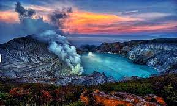

Destinasi Wisata Pilihan

Eksplorasi Keindahan Alam Pulau Komodo
Jelajahi keindahan alam pulau-pulau Komodo, yang terkenal dengan keberadaan komodo sebagai hewan purba.

Petualangan di Kawah Ijen, Jawa Timur
Rencanakan perjalanan petualangan ke Kawah Ijen, yang terkenal dengan panorama danau kawah birunya yang memukau.

Menyelami Budaya Tana Toraja, Sulawesi Selatan
Jelajahi keunikan budaya Tana Toraja di Sulawesi Selatan, termasuk tradisi unik pemakaman dan rumah tradisional Toraja.
Menyusuri Sungai Kapuas, Kalimantan Barat
Jelajahi keindahan alam Kalimantan Barat dengan menyusuri Sungai Kapuas, sungai terpanjang di Indonesia.

Melihat Keajaiban Alam Danau Toba, Sumatera Utara
Terangkan tentang keindahan Danau Toba, danau vulkanik terbesar di dunia, dan mengunjungi desa tradisional Batak.
Pantai Pink Pulau Komodo, Nusa Tenggara Timur
Pamerkan kecantikan langka Pantai Pink. Jelajahi keunikan pasir pantai yang berwarna pink dan keindahan lautnya.